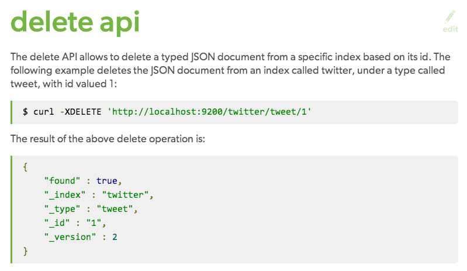
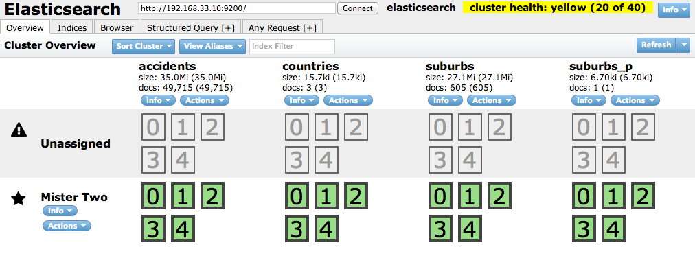

Introduction to the Geospatial Goodies in Elasticsearch
What are we going to talk about?
Elasticsearch..what it is and isn'tImporting spatial dataQueriesKibana
What is Elasticsearch?
An Open Source, Distributed, RESTful Search Engine
or...
"A fancy wrapper around Lucene" (cc @j_s_n_d)
Some Highlights
Interrogate your data
Structured: Give me all emails sent by SimonUnstructured: Give me all emails where Simon mentioned Edward SnowdenAnalyse: What is the average number of emails Simon writes relating to Edward Snowden
Some Highlights
Distributed & Highly Available

Some Highlights
Well documented Restful API
Some Highlights
.....and ofcourse it has Geospatial goodies!
What is Elasticsearch....not
A GISSomething to make maps withA persistant storeThe answer to all your problems
Why bother?
When you want to deal with alot of 'event' dataWhen you want to have a better search experienceWhen you want to service alot of demandWhen you want to deal with unstructured dataBecause searching for stuff on maps often sucks!
Getting Spatial Data In
Indexes - think of it as a databaseDocuments - are stored in indexes and are modelled as JSONTypes - Indexes can contain types of documents - think of these as tablesMapping - define the schema of a type - automatically inferred by ElasticsearchTypes - a datatype for the fields in documents - Important Types - Geo Shape & Geo Point
1. Create Index
$ curl -XPUT 'http://localhost:9200/accidents/'
2. Insert Mapping
$ curl -XPUT '127.0.01:9200/suburbs/_mapping/suburb' --data @mapping.json
By default Elasticsearch does not automatically create the correct field types for Geospatial data, therefore we have to explicitly create a mapping which includes the correct Geospatial type.
3. Load record
$ curl -XPUT 'http://localhost:9200/suburbs/suburb/0' -d '{
"geometry": {
"type": "Polygon",
"coordinates": [
....
},
"type": "Feature",
"id": "0",
"properties": {
"PFI": "205408870",
"LOCALITY": "PASTORIA",
"GAZLOC": "PASTORIA",
"VICNAMESID": 102463,
"PFI_CR": "2005-09-27",
"UFI": 468965928,
"UFI_CR": "2013-10-24",
"UFI_OLD": 300944123,
"POST_CODE": null
}
}'
Pyes
import pyes
conn = pyes.ES('127.0.0.1:9200', timeout=60)
conn.index('mydata','myindex','mytype','mykey')
Choose your poison...perl, python, ruby, php, java, javascript, .net, haskell, scala, clojure, go, erlang, eventmachine, command line, ocaml, smalltalk, nodejs.......and COLDFUSION!
A quick word about Rivers
......be careful
Geoshape Filter
"Identify all accidents which occurred within a particular area"
Pre-indexed Geoshape Filter
"Identify all accidents which occurred within Melbourne."
Geo Distance Filter
"Identify all accidents which occurred within 50m of this intersection."
Geo Distance Sort
"Identify closest 10 accidents which occurred near this intersection...and sort them."
Geo Distance Aggregation
"Identify accidents which occurred less than 50m and between 50m to 100m of this intersection...and group by day of the week."
Percolate
'Search in Reverse'
"Identify the suburb which this point falls within"
Plugins
Lots of plugins available..Head, Paramedic, Marvel
Kibana
Resources
All of the content is available in this gitbook